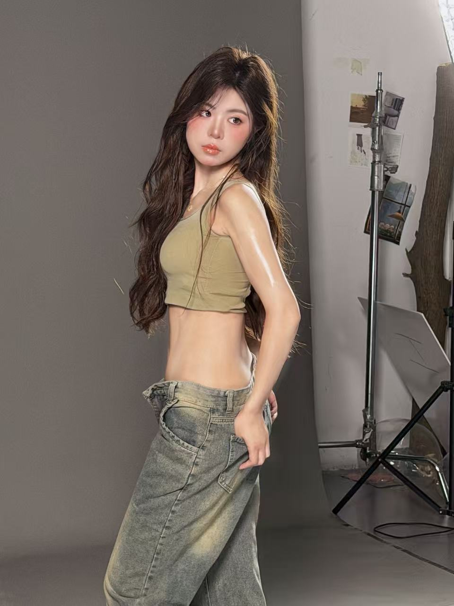
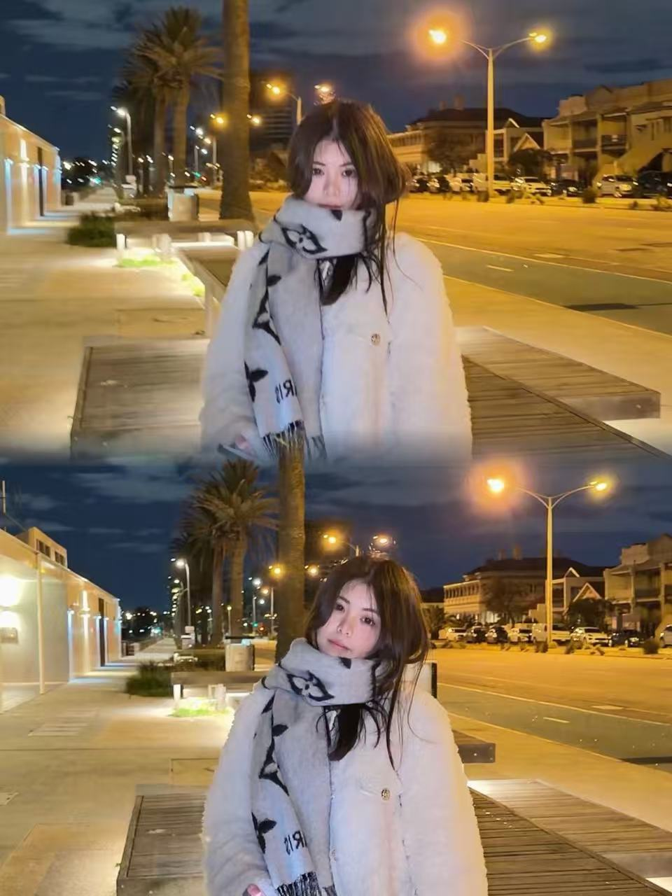
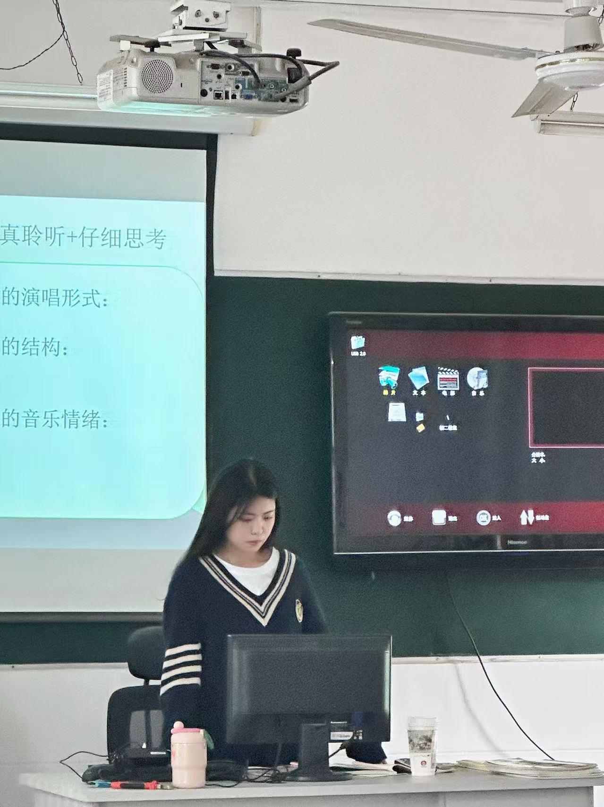

闵雨涵
Yuhan Min
Open to opportunities
PORTFOLIO · 2026
我是闵雨涵，Monash University 教育学硕士在读。 具备教育研究、活动运营、团队管理与内容表达经验， 擅长把复杂任务拆解成清晰流程，并推动项目稳定落地。
01 / ABOUT
教育、艺术与项目管理的复合背景，让我既关注人的体验，也重视流程与结果。
我擅长在多任务环境中梳理重点、协调资源、推进执行，并通过内容表达让信息更易理解、更具行动力。
在校大学生艺术团担任团长期间，我负责日常运营、成员招募培训、跨部门协调与大型活动落地； 在 AI 教育应用研究项目中，我负责进度管理、研究整合、英文汇报与成果交付； 在中学教学实践中，我积累了课程设计、用户沟通、现场管理与复盘改进经验。
02 / PHOTO DIARY
工作中的认真，生活里的好奇，都是我喜欢记录的自己。


03 / JOURNEY
从艺术团队运营、课堂与班级管理，到 AI 教育研究，我持续积累内容、沟通和项目推进能力。
负责80余人团队管理与10余场大型活动策划。
完成120余课时，并参与班级及校园活动运营。
聚焦 AI 教育应用、教育管理与课程设计。
统筹3名组员，完成20+篇文献研究与英文汇报。
04 / SELECTED WORK
以下内容均基于真实经历整理，重点展示项目方法、执行过程与成果数据。
2021.06 – 2023.06
负责校艺术团日常运营管理，统筹各部门资源，完成成员招募、培训、考核与大型活动全流程执行。

2023.03 – 2024.03
独立完成课程设计与课堂实施，同时参与班级管理、家长沟通和校园艺术活动组织。
2025.06 – 2025.12
统筹 3 名组员推进研究项目，负责文献梳理、案例分析、成果整合、PPT 设计与全英文汇报。
05 / HOW I WORK
不只完成任务，也关注信息是否清晰、协作是否顺畅、结果是否能够被复用。
明确受众、目标和交付标准，把复杂任务拆成可执行节点，并预留沟通与复盘空间。
通过明确分工、时间节点和反馈机制，减少信息差与重复沟通。
把研究、活动和项目成果整理成清晰的报告、展示与可复用模板。
关注过程中的问题、用户反馈与数据表现，为下一轮执行积累经验。
06 / SKILLS
以项目推进、内容表达和沟通协作为核心，同时持续强化数字化工具能力。
07 / CONTACT
正在寻找运营、项目管理、教育管理及内容相关机会。